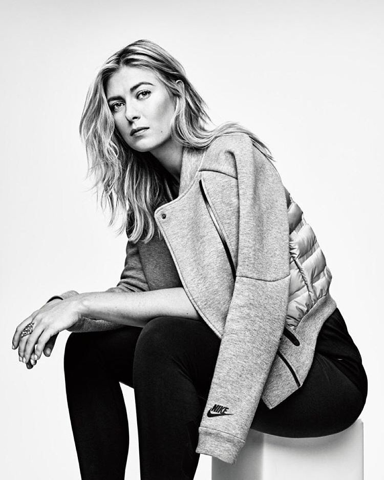
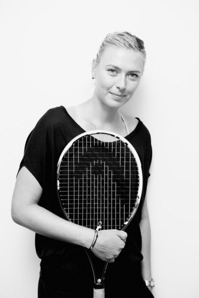

Latest News

“It’s a very special career,” Sharapova said in her press conference. “There is a lot of repetition, but there are also a lot of amazing moments, (like) walking through tunnels of Grand Slams and the camera is in front of you, there is a reason they’re there, the anticipation.” |

I didn't take care of the chances that I had. By 'chances,' I mean the balls that were a little bit shorter. I hesitated to move forward. The balls where I did attack, I made unforced errors, especially on that inside-out forehand today.' Asked if she was surprised by the Spaniard's tennis level, Sharapova replied: 'I'm not going to be surprised by someone that is playing in the fourth round. |

Sharapova put a brave face on things, saying she has come a long way since last year. It is now more than 14 months since she returned to the WTA Tour following her 15-month ban, imposed for taking meldonium, a drug she failed to realise had been added to the World Anti-Doping Authority banned list at the start of 2018. |

Fans seemed to be enthusiastic about her return to the game. There are less complaints about her presence since she’s entered the tournament in the Top 50 (ranked 48) on her own, without any special favors. Perhaps her peers feel she paid her dues last year and showed maybe a little humility under so much scrutiny and criticism. |